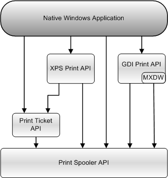

Windows provides applications with a complete set of functions that allow printing to various devices, such as laser printers, vector plotters, raster printers, and fax machines.
Windows programmers can select from several different technologies to print from their application.
| Technology | Description |
|---|---|
| Print Document Package API | Provides an interface that allows an application to access and manage the print document package. This API is available with Windows 8 and later versions of Windows. |
| Print Spooler API | Provides an interface to the print spooler so that applications can manage printers and print jobs. Applications use the Print Spooler API to start, stop, control, and configure print jobs managed by the print spooler whether they use the Print Document Package API or the GDI Print API to print the content. |
| Print Ticket API | Provides applications with functions to manage and convert print tickets. |
| GDI Print API | Provides applications with a device-independent printing interface. Note: Developers who are writing applications for Windows Vista and later versions of Windows should consider using the XPS Document API in their application. The GDI Print API is suitable for applications that must run on Windows XP and earlier versions of Windows. |
The following illustration provides a high-level view of how the different printing APIs are related.

The Print Document Package APIs in this section describe the print document package and print preview interfaces that you can use with Windows 8 and later versions of Windows desktop.
For more info about printing from Windows Store apps that are written in JavaScript and HTML, see Printing (Windows Store apps using JavaScript and HTML). For more info about printing from Windows Store apps that are written in C#, Microsoft Visual Basic, or C++ and XAML, see Printing (Windows Store apps using C).
[!Note]
See Win32 and COM for Windows Store apps (printing and documents) for the list of the Desktop App Printing APIs that can also be used in Windows Store apps.